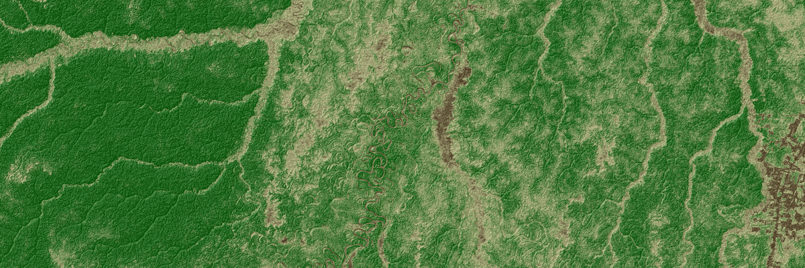

Manuel Weber
Research Scientist, Geospatial AI
manuel.wbr (at) gmail.com
manuel.wbr (at) gmail.com

Hi, my name is Manuel and I’m currently a Research Scientist at
EarthDaily. I hold a PhD in Physics from the University of Bern,
where I studied the properties of neutrinos—some of the most
elusive particles in the universe. I continued my research as a
Postdoc at Stanford, where I began integrating machine learning
into scientific data analysis. In 2019, I transitioned from
academia to industry to focus on applying AI to geospatial and
environmental challenges through satellite-based Earth
observation.
Over the past six years, I’ve developed deep learning–based computer vision solutions for both clients and internal research, including applications in object detection, object tracking, crop yield modeling, change detection, neural architecture search, and biomass estimation. My current focus is on sustainability, particularly forest carbon estimation from multi-sensor Earth observation data. I’m also actively working on Earth observation foundation models, which I believe will play a key role in scaling access to geospatial insights and accelerating scientific progress.
Over the past six years, I’ve developed deep learning–based computer vision solutions for both clients and internal research, including applications in object detection, object tracking, crop yield modeling, change detection, neural architecture search, and biomass estimation. My current focus is on sustainability, particularly forest carbon estimation from multi-sensor Earth observation data. I’m also actively working on Earth observation foundation models, which I believe will play a key role in scaling access to geospatial insights and accelerating scientific progress.
Research
 Geospatial foundation models
GeoFM hold the potential to revolutionize how we interact with
geospatial data. This is my research on a novel architecture and
SSL approach.
Geospatial foundation models
GeoFM hold the potential to revolutionize how we interact with
geospatial data. This is my research on a novel architecture and
SSL approach.
 Forest biomass, canopy height and cover
Mapping the worlds biomass stored in forests is crucial for
environmental studies. I have developed an AI model for this
task.
Forest biomass, canopy height and cover
Mapping the worlds biomass stored in forests is crucial for
environmental studies. I have developed an AI model for this
task.
 Generic change detection
Change detection in remote sensing data is widely used but
mostly implemented with custom models. This is a generic
approach.
Generic change detection
Change detection in remote sensing data is widely used but
mostly implemented with custom models. This is a generic
approach.
Publications
|
M Weber, C Beneke, C Wheeler
Remote Sensing 17 (9), 1594
|
2025
|
|
M Weber, C Beneke
arXiv preprint arXiv:2504.18770
|
2025
|
|
SX Wu, BG Lenardo, Manuel Weber, Giorgio Gratta
Nucl. Instrum. Methods Phys. Res., Sect. A
|
2020
|
|
EXO-Collaboration
Phys. Rev. Lett. 123, 161802
|
2019
|
|
S Delaquis, MJ Jewell, I Ostrovskiy, M Weber, T Ziegler,
et al.
J. Instrum. 13 (08), P08023
|
2018
|
|
EXO-Collaboration
Nature 510, 229-234
|
2014
|
|
EXO-Collaboration
Phys. Rev. Lett. 107, 212501
|
2011
|
Contact